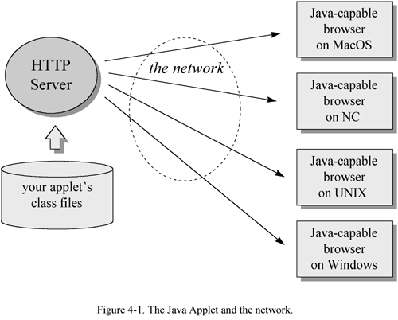
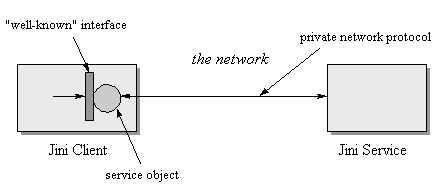

The previous two chapters discussed how Java's architecture deals with the two major challenges presented to software developers by a networked computing environment. Platform independence deals with the challenge that many different kinds of computers and devices are usually connected to the same network. The sandbox security model deals with the challenge that networks represent a convenient way to transmit viruses and other forms of malicious code. This chapter describes not how Java's architecture deals with a challenge, but how it seizes an opportunity made possible by the network. 总结前面两章讲了什么，这一章要讲什么。前两章是面对“challenge”，这一章是抓住“opportunity”。
One of the fundamental reasons Java is a useful tool for networked software environments is that Java's architecture enables the network mobility of software. In fact, it was primarily this aspect of Java technology that was considered by many in the software industry to represent a paradigm shift. This chapter examines the nature of this new paradigm of network-mobile software, and how Java's architecture makes it possible. network mobility of software --> paradigm shift
Prior to the advent of the personal computer, the dominant computing model was the large mainframe computer serving multiple users. By time-sharing, a mainframe computer divided its attention among several users, who logged onto the mainframe at dumb terminals. Software applications were stored on disks attached to the mainframe computer, allowing multiple users to share the same applications while they shared the same CPU. A drawback of this model was that if one user ran a CPU- intensive job, all other users would experience degraded performance. mainframe computer：在personal computer出现之前，是mainframe computer的主流市场
The appearance of the microprocessor led to the proliferation of the personal computer. This change in the hardware status quo changed the software paradigm as well. Rather than sharing software applications stored at a mainframe computer, individual users had individual copies of software applications stored at each personal computer. Because each user ran software on a dedicated CPU, this new model of computing addressed the difficulties of dividing CPU-time among many users attempting to share one mainframe CPU. microprocessor --> personal computer
Initially, personal computers operated as unconnected islands of computing. The dominant software model was of isolated executables running on isolated personal computers. But soon, personal computers began to be connected to networks. Because a personal computer gave its user undivided attention, it addressed the CPU-time sharing difficulties of mainframes. But unless personal computers were connected to a network, they couldn't replicate the mainframe's ability to let multiple users view and manipulate a central repository of data. personal computer --> network
As personal computers connected to networks became the norm, another software model began to increase in importance: client/server. The client/server model divided work between two processes running on two different computers: a client process ran on the end-user's personal computer, and a server process ran on some other computer hooked to the same network. The client and server processes communicated with one another by sending data back and forth across the network. The server process often simply accepted data query commands from clients across the network, retrieved the requested data from a central database, and sent the retrieved data back across the network to the client. Upon receiving the data, the client processed, displayed, and allowed the user to manipulate the data. This model allowed users of personal computers to view and manipulate data stored at a central repository, while not forcing them to share a central CPU for all of the processing of that data. Users did share the CPU running the server process, but to the extent that data processing was performed by the clients, the burden on the central CPU hosting the server process was lessened. personal computer --> network --> client/server
The client/server architecture was soon extended to include more than two processes. The original client/server model began to be called 2-tier client/server, to indicate two processes: one client and one server. More elaborate architectures were called 3-tier, to indicate three processes, 4-tier, to indicate four processes, or N-tier, to indicate people were getting tired of counting processes. Eventually, as more processes became involved, the distinction between client and server blurred, and people just started using the term distributed processing to encompass all of these schemes. client/server(2-tier) --> 3-tier --> 4-tier --> N-tier --> distributed processing
The distributed processing model leveraged the network and the proliferation of processors by dividing processing work loads among many processors while allowing those processors to share data. Although this model had many advantages over the mainframe model, there was one notable disadvantage: distributed processing systems were more difficult to administer than mainframe systems. On mainframe systems, software applications were stored on a disk attached to the mainframe. Even though an application could serve many users, it only needed to be installed and maintained in one place. When an application was upgraded, all users got the new version the next time they logged on and started the application. By contrast, the software executables for different components of a distributed processing system were usually stored on many different disks. In a client/server architecture, for example, each computer that hosted a client process usually had its own copy of the client software stored on its local disk. As a result, a system administrator had to install and maintain the various components of a distributed software system in many different places. When a software component was upgraded, the system administrator had to physically upgrade each copy of the component on each computer that hosted it. As a result, system administration was more difficult for the distributed processing model than for the mainframe model. distributed processing systems were more difficult to administer
The arrival of Java, with an architecture that enabled the network-mobility of software, heralded yet another model for computing. Building on the prevailing distributed processing model, the new model added the automatic delivery of software across networks to computers that ran the software. This addressed the difficulties involved in system administration of distributed processing systems. For example, in a client/server system, client software could be stored at one central computer attached to the network. Whenever an end-user needed to use the client software, the binary executable would be sent from the central computer across the network to the end-user's computer, where the software would run. Java --> network-mobility of software --> addressed the difficulties
So network-mobility of software represented another step in the evolution of the computing model. In particular, it addressed the difficulty of administering a distributed processing system. It simplified the job of distributing any software that was to be used on more than one CPU. It allowed data to be delivered together with the software that knows how to manipulate or display the data. Because code was sent along with data, end-users would always have the most up-to-date version of the code. Thus, because of network-mobility, software can be administered from a central computer, reminiscent of the mainframe model, but processing can still be distributed among many CPUs. Java --> network-mobility of software --> data + software
The shift away from the mainframe model towards the distributed processing model was a consequence of the personal computer revolution, which was made possible by the rapidly increasing capabilities and decreasing costs of processors. Similarly, lurking underneath the latest software paradigm shift towards distributed processing with network-mobile code is another hardware trend--the increasing capabilities and decreasing costs of network bandwidth. As bandwidth, the amount of information that can be carried by a network, increases, it becomes practical to send new kinds of information across a network; and with each new kind of information a network carries, the network takes on a new character. Thus, as bandwidth grows, simple text sent across a network can become enhanced with graphics, and the network begins to take on an appearance reminiscent of newspapers or magazines. Once bandwidth expands enough to support live streams of audio data, the network begins to act like a radio, a CD-player, or a telephone. With still more bandwidth, video becomes possible, resulting in a network that competes with TV and VCRs for the attention of couch potatoes. But there is still one other kind of bandwidth-hungry content that becomes increasingly practical as bandwidth improves: computer software. Because networks by definition interconnect processors, one processor can, given enough bandwidth, send code across a network for another processor to execute. Once networks begin to move software as well as data, the network begins to look like a computer in its own right. software paradigm shift <-- hardware trend: the increasing capabilities and decreasing costs of network bandwidth
As software begins to travel across networks, not only does the network begin to take on a new character, but so does the software itself. Network-mobile code makes it easier to ensure that an end-user has the necessary software to view or manipulate some data sent across the network, because the software can be sent along with the data. In the old model, software executables from a local disk were invoked to view data that came across the network, thus the software application was usually a distinct entity, easily discernible from the data. In the new model, because software and data are both sent across the network, the distinction between software and data is not as stark--software and data blur together to become "content." 在网络中传输的是不只是data，还有software，这让data和software两者之间的界线变得模糊。
As the nature of software evolves, the end-user's relationship to software evolves as well. Prior to network-mobility, an end-user had to think in terms of software applications and version numbers. Software was generally distributed on media such as tapes, floppy disks, or CD-ROMs. To use an application, an end-user had to get the installation media, physically insert them into a drive or reader attached to the computer, and run an installation program that copied files from the installation media to the computer's hard disk. Moreover, the end-user often did this process multiple times for each application, because software applications were routinely replaced by new versions that fixed old bugs and added new features (and usually added new bugs too). When a new version was released, end-users had to decide whether or not to upgrade. If an end-user decided to upgrade, the installation process had to repeated. Thus, end-users had to think in terms of software applications and version numbers, and take deliberate action to keep their software applications up-to-date. 在network-mobility of software出现之前，用户要手动管理自己的软件。
In the new model, end-users think less in terms of software applications with discrete versions, and more in terms of self-evolving "content services." Whereas installing a traditional software application or an upgrade was a deliberate act on the part of the end-user, network-mobility of software enables installation and upgrading that is more automatic. Network-delivered software need not have discrete version numbers that are known to the end-user. The end-user need not decide whether to upgrade, and need not take any special action to upgrade. Network-delivered software can just evolve of its own accord. Instead of buying discrete versions of a software application, end-users can subscribe to a content service--software that is delivered across a network along with relevant data--and watch as both the software and data evolve automatically over time. 在network-mobility of software出现之后，用户则不需要关注软件的安装问题。
Once you move away from delivering software in discrete versions towards delivering software as self-evolving streams of interactive content, your end-user loses some control. In the old model, if a new version appeared that had serious bugs, an end-user could simply opt not to upgrade. But in the new model, an end-user can't necessarily wait until the bugs are worked out of a new version before upgrading to the new version, because the end-user may have no control over the upgrading process. 在network-mobility of software出现之后，用户对于软件的使用版本失去了一定控制权。
For certain kinds of products, especially those that are large and full-featured, end-users may prefer to retain control over whether and when to upgrade. Consequently, in some situations software vendors may publish discrete versions of a content service over the network. At the very least, a vendor can publish two branches of a service: a beta branch and a released branch. End-users that want to stay on the bleeding edge can subscribe to the beta service, and the rest can subscribe to the released service that, although it may not have all the newest features, is likely more robust. a vendor can publish two branches of a service: a beta branch and a released branch.
Yet for many content services, especially simple ones, most end-users won't want to have to worry about versions, because worrying about versions makes software harder to use. The end-user has to have knowledge about the differences between versions, make decisions about when and if to upgrade, and take deliberate action to cause an upgrade. Content services that are not chopped up into discrete versions are easier to use, because they evolve automatically. Such a content service, because the end-user doesn't have to maintain it but can just simply use it, takes on the feel of a "software appliance." 在许多场景下，用户不需要关心软件的版本
Many self-evolving content services will share two fundamental characteristics with common household appliances: a focused functionality and a simple user-interface. Consider the toaster. A toaster's functionality is focused exclusively on the job of preparing toast, and it has a simple user-interface. When you walk up to a toaster, you don't expect to have to read a manual. You expect to put the bread in at the top and push down a handle until it clicks. You expect to be able to peer in and see orange wires glowing, and after a moment, to hear that satisfying pop and see your bread transformed into toast. If the result is too light or too dark, you expect to be able to slide a knob to indicate to the toaster that the next time, you want your toast a bit darker or lighter. That's the extent of the functionality and user-interface of a toaster. Likewise, the functionality of many content services will be as focused and the user-interface will be as simple. If you want to order a movie through the network, for example, you don't want to worry whether you have the correct version of movie-ordering software. You don't want to have to install it. You just want to switch on the movie-ordering content service, and through a simple user-interface, order your movie. Then you can sit back and enjoy your network-delivered movie as you eat your toast. content services的软件的两个特点：核心功能、简单的用户界面
A good example of a content service is a World Wide Web page. If you look at an HTML file, it looks like a source file for some kind of program. But if you see the browser as the program, the HTML file looks more like data. Thus, the distinction between code and data is blurred. Also, people who browse the World Wide Web expect web pages to evolve over time, without any deliberate action on their part. They don't expect to see discrete version numbers for web pages. They don't expect to have to do anything to upgrade to the latest version of a page besides simply revisiting the page in their browser. 这里举了content service的例子：World Wide Web
In the coming years, many of today's media may to some extent be assimilated by the network and transformed into content services. (As with the Borg from Star Trek, resistance is futile.) Broadcast radio, broadcast and cable TV, telephones, answering machines, faxes, video rental stores, newspapers, magazines, books, computer software--all of these will be affected by the proliferation of networks. But just as TV didn't supplant radio entirely, content services will not entirely supplant existing media. Instead, content services will likely take over some aspects of existing media, leaving the existing media to adjust accordingly, and create some new forms that didn't previously exist. 更多形式的media被放到network中，形成content services
In the computer software domain, the content service model will not completely replace the old models either. Instead, it will likely take over certain aspects of the old models that fit better in the new model, add new forms that didn't exist before, and leave the old models to adjust their focus slightly in light of the newcomer. content service并不会代替传统的media形式，传统的media形式也会做出相应的调整
This book is an example of how the network can affect existing media. The book was not entirely replaced by a content service counterpart, but instead of including resource pointers (sources where you can find further information on topics presented in the book) as part of the book, they were placed on a web page. Because resource pointers change so often, it made sense to let the network assimilate that part of the book. Thus, the resource pointers portion of the book has become a content service. 这里又举一个例子
The crux of the new software paradigm, therefore, is that software begins to act more like appliances. End-users no longer have to worry about installation, version numbers, or upgrading. As code is sent along with data across the network, software delivery and updating become automatic. In this way, simply by making code mobile, Java unleashes a whole new way to think about software development, delivery, and use. the new software paradigm --> 用户不需要再去考虑软件的安装、升级
Java's architectural support for network-mobility begins with its support for platform independence and security. Although they are not strictly required for network-mobility, platform independence and security help make network-mobility practical. Platform independence makes it easier to deliver a program across the network because you don't have to maintain a separate version of the program for different platforms, and you don't have to figure out how to get the right version to each computer. One version of a program can serve all computers. Java's security features help promote network-mobility because they give end-users confidence to download class files from untrusted sources. In practice, therefore, Java's architectural support for platform independence and security facilitate the network-mobility of its class files. platform independence and security促进了network-mobility
Beyond platform independence and security, Java's architectural support for network-mobility is focused on managing the time it takes to move software across a network. If you store a program on a server and download it across a network when you need it, it will likely take longer for your program to start than if you had started the same program from a local disk. Thus, one of the primary issues of network-mobile software is the time it takes to send a program across a network. Java's architecture addresses this issue by rejecting the traditional monolithic binary executable in favor of small binary pieces: Java class files. Class files can travel across networks independently, and because Java programs are dynamically linked and dynamically extensible, an end-user needn't wait until all of a program's class files are downloaded before the program starts. The program starts when the first class file arrives. Class files themselves are designed to be compact, so that they fly more quickly across networks. Therefore, the main way Java's architecture facilitates network-mobility directly is by breaking up the monolithic binary executable into compact class files, which can be loaded as needed. 除了platform independence and security，Java还注重网络数据传输过程中消耗的时间
The execution of a Java application begins at a main() method of some class,
and other classes are loaded and dynamically linked as they are needed by the application.
If a class is never actually used during one session, that class won't ever be loaded during that session.
For example, if you are using a word processor that has a spelling checker,
but during one session you never invoke the spelling checker,
the class files for the spelling checker will not be loaded during that session.
Java application加载过程中，只加载需要使用到的类，这就是dynamic linking。
In addition to dynamic linking, Java's architecture also enables dynamic extension. Dynamic extension is another way the loading of class files (and the downloading of them across a network) can be delayed in a Java application. Using class loader objects, a Java program can load extra classes at run-time, which then become a part of the running program. Therefore, dynamic linking and dynamic extension give a Java programmer some flexibility in designing when class files for a program are loaded, and as a result, how much time an end-user must spend waiting for class files to come across the network. Java's architecture支持dynamic linking和dynamic extension。
Besides dynamic linking and dynamic extension, another way Java's architecture directly supports network mobility is through the class file format itself. To reduce the time it takes to send them across networks, class files are designed to be compact. In particular, the bytecode streams they contain are designed to be compact. They are called "bytecodes" because each instruction occupies only one byte. With only two exceptions, all opcodes and their ensuing operands are byte aligned to make the bytecode streams smaller. The two exceptions are opcodes that may have one to three bytes of padding after the opcode and before the start of the operands, so that the operands are aligned on word boundaries. Other than the two opcodes that may have a small amount of padding, all data in a class file is byte aligned. class file format --> network mobility
One of the implications of the compactness goal for class files is that Java compilers are not likely to do any local optimization. Because of binary compatibility rules, Java compilers can't perform global optimizations such as inlining the invocation of another class's method. (Inlining means replacing the method invocation with the code performed by the method, which saves the time it takes to invoke and return from the method as the code executes.) Binary compatibility requires that a method's implementation can be changed without breaking compatibility with pre-existing class files that depend on the method. Inlining could be performed in some circumstances on methods within a single class, but in general that kind of optimization is not done by Java compilers, partly because it goes against the grain of class file compactness. Optimizations are often a tradeoff between execution speed and code size. Therefore, Java compilers generally leave optimization up to the Java Virtual Machine, which can optimize code as it loads classes for interpreting or just-in-time compiling. class file --> compactness --> no optimization
Beyond the architectural features of dynamic linking, dynamic extension and class file compactness, there are some strategies that, although they are really not necessarily part of the architecture, help manage the time it takes to move class files across a network. Because HTTP protocols require that each class file of Java applet be requested individually, it turns out that often a large percentage of applet download time is due not to the actual transmission of class files across the network, but to the network handshaking of each class file request. The overhead for a file request is multiplied by the number of class files being requested. To address this problem, Java 1.1 included support for JAR (Java ARchive) files. JAR files enable many class files to be sent in one network transaction, which greatly reduces the overhead time required to move class files across a network compared with sending one class file at a time. Moreover, the data inside a JAR file can be compressed, which results in an even shorter download time. So sometimes it pays to send software across a network in one big chunk. If a set of class files is definitely needed by a program before that program can start, those class files can be more speedily transmitted if they are sent together in a JAR file. 为了加快网络的传输速度，可以将多个class文件打成jar包
One other strategy to minimize an end-user's wait time is to not download class files on-demand. Through various techniques, such as the subscription model used by Marimba Castanet, class files can be downloaded before they are needed, resulting in a program that starts up faster. You can obtain more information about Castanet's model from the resource page for this chapter. 另一种策略，Castanet's model
Therefore, other than platform independence and security, which help make network-mobility practical, the main focus of Java's architectural support for network-mobility is managing the time it takes to send class files across a network. Dynamic linking and dynamic extension allow Java programs to be designed in small functional units that are downloaded as needed by the end-user. Class file compactness helps reduce the time it takes to move a Java program across the network. The JAR file enables compression and the sending of multiple class files across the network in a single network file-transfer transaction. network-mobility = dynamic linking + dynamic extension + class file compactness + jar file
Java is a network-oriented technology that first appeared at a time when the network was looking increasingly like the next revolution in computing. The reason Java was adopted so rapidly and so widely, however, was not simply because it was a timely technology, but because it had timely marketing. Java was not the only network-oriented technology being developed in the early to mid 1990s. And although it was a good technology, it wasn't the necessarily the best technology--but it probably had the best marketing. Java was the one technology to hit a slim market window in early 1995, resulting in such a strong response that many companies developing similar technologies canceled their projects, including Microsoft, which canceled a project code-named Blackbird. Companies that carried on with their technologies, such as AT&T did with a network-oriented technology named Inferno, saw Java steal much of their potential thunder. Java迅速发展起来，和当时的市场环境也有关系；Java也并不一定是最好的技术，它只是占得了先机。
There were several important factors in how Java was initially unleashed on the world that contributed to its successful marketing. First, it had a cool name--one that could be appreciated by programmers and non-programmers alike. Second, it was, for all practical purposes, free--always a strong selling point among prospective buyers. But the most critical factor contributing to the successful marketing of Java, however, was that Sun's engineers hooked Java technology to the World Wide Web at the precise moment Netscape was looking to transform their web browser from a graphical hypertext viewer to a full-fledged computing platform. As the World Wide Web swept through the software industry (and the global consciousness) like an ever-increasing tidal wave, Java rode with it. Therefore, in a sense Java became a success because Java "surfed the web." It caught the wave at just the right time and kept riding it as one by one, its potential competitors dropped uneventfully into the cold, dark sea. The way the engineers at Sun hooked Java technology to the World Wide Web--and therefore, the key way Java was successfully marketed--was by creating a special flavor of Java program that ran inside a web browser: the Java applet. Java迅速发展起来，第一方面是有个好名字，第二方面是免费，第三方面是抓住了World Wide Web的机遇，推出了它的程序Java applet。
The Java applet showed off all of Java's network-oriented features: platform independence, network-mobility, and security. Platform independence was one of the main tenets of the World Wide Web, and Java applets fit right in. Java applets can run on any platform so long as there is a Java-capable browser for that platform. Java applets also demonstrated Java's security capabilities, because they run inside a strict sandbox. But most significantly, Java applets demonstrated the promise of network-mobility. As shown in Figure 4-1, Java applets can be maintained on one server, from which they can travel across a network to many different kinds of computers. To update an applet, you only need to update the server. Users will automatically get the updated version the next time they use the applet. Thus, maintenance is localized, but processing is distributed. The Java applet showed off all of Java's network-oriented features: platform independence, network-mobility, and security.

Java-capable browsers fire off a Java application that hosts the applets the browser displays. To display a web page, a web browser requests an HTML file from an HTTP server. If the HTML file includes an applet, the browser will see an HTML tag such as this:
begin <applet CODE="HeapOfFish.class" CODEBASE="gcsupport/classes" WIDTH=525 HEIGHT=360> </applet> end
This "applet" tag provides enough information to enable the browser to display the applet.
The CODE attribute indicates the name of the applet's starting class file, in this case: HeapOfFish.class.
The CODEBASE attribute gives the location of the applet's class files relative to the base URL of the web page.
The WIDTH and HEIGHT attributes indicate the size in pixels of the applet's panel,
the visible portion of the applet that is displayed as part of the web page.
When a browser encounters a web page that includes an applet tag, it passes information from the tag to the running Java application.
The Java application either creates a new class loader object object, or re-uses an existing one, to download the starting class file for the applet.
It then initializes the applet, by invoking the init() method of the applet's starting class.
The other class files for the applet are downloaded on an as needed basis, by the normal process of dynamic linking.
For example, when a new class is first used by the applet's starting class, the symbolic reference to the new class must be resolved.
During resolution, if the class has not already been loaded, the Java Virtual Machine will ask the same class loader object that loaded the applet's starting class to load the new class.
If the class loader object is unable to load the class from the local trusted repository through the primordial class loader,
the class loader object will attempt to download the class file across the network from the same location it retrieved the applet's starting class.
Once initialization of the applet is complete, the applet appears as part of the web page inside the browser.
Although the network-mobility of code made possible by Java's architecture and demonstrated by Java applets represented an important step in the evolution of computing models, Java's architecture held one other promise: the network mobility of objects. An object can move across a network as a combination of code, which defines the object's class, plus data that gives a snapshot of the object's state. Where network mobility of code can help simplify the work of systems administrators, network mobility of objects can help simplify the work of software developers designing and deploying distributed systems. Through object serialization and Remote Method Invocation (RMI), the Java API supplies a distributed object model that extends Java's local object model beyond the boundaries of the Java virtual machine. The distributed object model enables objects in one virtual machine to hold references to objects in other virtual machines, to invoke methods on those remote objects, and to exchange objects between virtual machines as parameters, return values, and exceptions of those method invocations. These capabilities, which are made practical by Java's underlying network-oriented architecture, can simplify the task of designing a distributed system because they in effect bring object-oriented programming to the network. network-mobility of code VS network mobility of objects
One technology that takes full advantage of the network mobility of objects made possible by Java's underlying network-friendly architecture, object serialization, and RMI, is Sun's Jini. Jini is a set of protocols and APIs that support the building and deployment of distributed systems that is targeted at the emerging proliferation of diskless embedded devices connected to networks. One particular piece of the Jini architecture, the service object, provides a good illustration of the way in which network-mobility of objects can be useful.
A Jini system is centered on a lookup service in which services register themselves by sending, among other objects, a service object. The service object represents the service to clients. Clients who want to access the service retrieve a copy of the service object from the lookup service and then interact with the service by invoking methods on the service object. The service object is responsible for implementing the service, either locally or by talking across the network to a software process or piece of hardware that implements the service.
To the Jini way of thinking, the network is made up of "services" that can be used by clients or other services. A service can be anything that sits on the network ready to perform a useful function. Hardware devices, software servers, communications channels -- even human users themselves -- can be services. A Jini-enabled disk drive, for example, could offer a "storage" service. A Jini-enabled printer could offer a "printing" service.
To perform a task, a client enlists the help of services. For example, a client program might upload pictures from the image storage service in a digital camera, download the pictures to a persistent storage service offered by a disk drive, and send a page of thumbnail-sized versions of the images to the printing service of a color printer. In this example, the client program builds a distributed system consisting of itself, the image storage service, the persistent storage service, and the color-printing service. The client and services of this distributed system work together to perform the task: to offload and store images from a digital camera and print out a page of thumbnails.
Jini provides a runtime infrastructure that enables service providers to offer their services to clients, and enables clients to locate and access services. The runtime infrastructure resides on the network in three places: in lookup services that sit on the network; in the service providers (such as Jini- enabled devices); and in clients. Lookup services are the central organizing mechanism for Jini-based systems. When new services become available on the network, they register themselves with a lookup service. When clients wish to locate a service to assist with some task, they consult a lookup service. Jini runtime infrastructure = Lookup services + service providers + clients
The runtime infrastructure uses one network-level protocol, called discovery, and two object-level protocols, called join and lookup. Discovery enables clients and services to locate lookup services. Join enables a service to register itself in a lookup service. Lookup enables a client to query a lookup service for services that can help the client accomplish its goals. Jini runtime infrastructure = discovery(network-level protocol) + join(object-level protocol) + lookup(object-level protocol)
The discovery process begins automatically when a service provider, such as a Jini-enabled disk drive that offers a storage service, is plugged into the network. When a service provider is connected to the network, it broadcasts a presence announcement by dropping a multicast packet onto a well-known port. Included in the presence announcement is an IP address and port number where the service provider can be contacted by a lookup service. discovery process: service provider --> broadcast IP address and port
Lookup services monitor the well-known port for presence announcement packets. When a lookup service receives a presence announcement, it opens and inspects the packet. The packet contains information that enables the lookup service to determine whether or not it should contact the sender of the packet. If so, it contacts the sender directly by making a TCP connection to the IP address and port number extracted from the packet. Using RMI, the lookup service sends an object, called a service registrar, across the network to the originator of the packet. The purpose of the service registrar object is to facilitate further communication with the lookup service. By invoking methods on the service registrar object, the sender of the announcement packet can perform join and lookup on the lookup service. In the case of a disk drive, the lookup service would make a TCP connection to the disk drive and would send it a service registrar object, through which the disk drive would then register its storage service via the join process. discovery process: Lookup services --> monitor the well-known port --> send service registrar --> service provider
Once a service provider has a service registrar object, the end product of discovery, it is ready to do a join -- to become registered in the lookup service.
To do a join, the service provider invokes the register() method on the service registrar object, passing as a parameter an object called a service item,
a bundle of objects that describe the service.
The register() method sends a copy of the service item up to the lookup service, where the service item is stored.
Once this has completed, the service provider has finished the join process: its service has become registered in the lookup service.
Join: service provider --> service registrar --> register() --> service item --> lookup service
The service item is a container for several objects, including the object called the service object, which clients can use to interact with the service. The service item can also include any number of attributes, which can be any kind of object. Some potential attributes are icons, classes that provide GUIs for the service, and objects that give more information about the service. service item is a container: service object + icons + GUI
Service objects usually implement one or more interfaces through which clients interact with the service.
For example, a lookup service is a Jini service, and its service object is the service registrar.
The register() method invoked by service providers during join is declared in the ServiceRegistrar interface,
which all service registrar objects implement.
Clients and service providers talk to the lookup service through the service registrar object by invoking methods declared in the ServiceRegistrar interface.
Likewise, a disk drive would provide a service object that implemented some well-known storage service interface.
Clients would look up and interact with the disk drive by this storage service interface.
Once a service has registered with a lookup service via the join process, that service is available for use by clients that query that lookup service. To build a distributed system of services that will work together to perform some task, a client must locate and enlist the help of the individual services. To find a service, clients query lookup services via a process called lookup.
To perform a lookup, a client invokes the lookup() method on a service registrar object.
(A client, like a service provider, gets a service registrar through the process of discovery, described previously.)
The client passes as an argument to lookup() a service template, an object that serves as search criteria for the query.
The service template can include a reference to an array of Class objects.
These Class objects indicate to the lookup service the Java type (or types) of the service object desired by the client.
The service template can also include a service ID, which uniquely identifies a service, and attributes,
which must exactly match the attributes uploaded by the service provider in the service item.
The service template can also contain wildcards for any of these fields.
A wildcard in the service ID field, for example, will match any service ID.
The lookup() method sends the service template to the lookup service,
which performs the query and sends back zero to many matching service objects.
The client gets a reference to the matching service objects as the return value of the lookup() method.
client --> lookup() --> service template --> lookup service
In the general case, a client looks up a service by Java type, usually an interface. For example, if a client needed to use a printer, it would compose a service template that included a Class object for a well-known interface to printer services. All printer services would implement this well-known interface. The lookup service would return a service object (or objects) that implemented this interface. Attributes can be included in the service template to narrow the number of matches for such a type-based search. The client would use the printer service by invoking on the service object methods declared in the well-known printer service interface.
In Jini systems, network-mobile objects fly all over the place. When a client or service performs discovery, for example, it receives a service registrar object from a lookup service. When a service registers itself with a lookup service through the join process, it sends to the lookup service a service item object, which itself is a container of many objects, including attributes and the service object. When a client performs lookup, it sends a service template object, a bundle of objects that serves as a search criteria for the lookup query. If the lookup is successful, the client receives either the service object or the entire service item for the service or services that matched the query. network-mobile objects在很多地方都用到了
How do all the objects flying across the network between clients, services, and the lookup service actually make distributed programming easier? In short, Jini's use of network-mobile objects (in particular, the network-mobile service object) raises the level of abstraction for distributed systems programming, effectively turning network programming into object-oriented programming.
Jini's architecture brings object-oriented programming to the network by enabling network services to take advantage of one of the fundamentals of object-oriented programming: the separation of interface and implementation. For example, a service object can grant clients access to the service in many ways. The object can actually represent the entire service, which is downloaded to the client during lookup and then executed locally. Alternatively, the service object can serve merely as a proxy to a remote server. When the client invokes methods on the service object, it sends the requests across the network to the server, which does the real work. The local service object and a remote server could also share the work.
One important consequence of Jini's architecture is that the network protocol used to communicate between a proxy service object and a remote server does not need to be known to the client. As illustrated in Figure 4-2, the network protocol is part of the service's implementation. This protocol is a private matter decided upon by the developer of the service. The client can communicate with the service via this private protocol because the service injects its own service object into the client's address space -- the service object moves across the network from service to client. The injected service object could communicate with a back-end server via RMI, CORBA, DCOM, some home-brewed protocol built on top of sockets and streams, or anything else. The client simply doesn't need to care about network protocols, because it can talk to the well-known interface that the service object implements. The service object takes care of any necessary communication on the network.

Figure 4-2. The client talks to the service through a well-known interface.
Different implementations of the same service interface can use completely different implementation approaches and completely different network protocols. A service can use specialized hardware to fulfill client requests, or it can do all its work in software. Different implementations of a service can be tuned for different environments. In addition, the implementation approach taken by a single service provider can evolve over time. The client can be sure it has a service object that understands the current implementation of the service, because the client receives the service object (by way of the lookup service) from the service provider itself. To the client, a service looks like the well-known interface, regardless of how the service is implemented.
Thus, Jini attempts to raise the level of abstraction for distributed systems programming, from the network protocol level to the object interface level. In the emerging proliferation of embedded devices connected to networks, many pieces of a distributed system may come from different vendors. Jini makes it unnecessary for vendors of devices to agree on low-level network protocols that allow their devices to interact. Instead, vendors will need to agree on high-level Java interfaces through which their devices can interact. Raising the level of discourse, from the network protocol level to the object interface level, will allow vendors to focus more on high-level concepts and less on low-level details. The higher level of discourse made possible by Jini should facilitate the process by which vendors of similar products come to an agreement on how their services will interact with clients.
In addition, Jini's architecture enables software developers to enjoy the benefits of separation of interface and implementation when they develop distributed systems. One such benefit is that well-defined object interfaces can help software developers work together effectively on large distributed systems projects. Similar to the way in which object interfaces define the contract between the parts of any object-oriented program, object interfaces can also serve to clarify the contract between the various members and teams of a large project who are responsible for individual pieces of the program. Another benefit of the separation of interface and implementation is that programmers can use it to reduce the impact of change by minimize coupling. The only point of coupling of a well-designed object is its interface; The implementation of an object can change without affecting code in any other object.
Jini brings the object-oriented benefits resulting from raising the level of abstraction and clearly separating interface from implementation to distributed systems programming by taking advantage of Java's support for network-mobile objects. The network-mobility of objects made possible by the combination of Java's underlying architecture, object serialization, and RMI, and demonstrated by the Jini service object, enables Jini to bring the benefits of object-oriented programming to the network.
Network-mobile Java software can come in many forms besides just the two forms, Java applets and Jini service objects, described in the previous sections. Yet although network-mobile Java is not limited to applets and service objects, the framework that supports any other form of network-mobile Java will likely look similar to the framework that supports applets and service objects. Like applets and service objects, for example, other forms of network-mobile Java will execute in the context of a host Java application, and the class files for the network-mobile Java code will be loaded by user-defined class loaders. User-defined class loaders can download class files across a network in custom ways that bootstrap class loaders usually can't. And because network-mobile class files are not always known to be trustworthy, the separate name-spaces provided by user-defined class loaders are needed to protect malicious or buggy code from interfering with code loaded from other sources. Lastly, because network-mobile class files can't always be trusted, there will generally be a security manager or access controller establishing a security policy for the network- mobile code.
The key to understanding Java's architecture, then, is to see enabling the network mobility of code and objects as the design center of Java. Although Java can offer valuable benefits, such as increased programmer productivity and increased program robustness, in situations that don't even remotely involve a network, the main focus of Java's architecture is the network. The Java virtual machine, Java class file, Java API, and Java programming language work in concert to make network mobile software both possible and practical. Through its support for network mobile code and objects, Java helps software developers meet challenges and seize opportunities presented by the ever-progressing network age.
For links to information about other examples of network-mobile Java, such as Marimba Castanet Channels, Jeeves Servlets, and Aglets (Java-based autonomous software agents ), see the resource page for this chapter: http://www.artima.com/insidejvm/resources.